01 / Data acquisition
Acquire an egocentric observation
A virtual camera is placed at a physically valid pose in a reconstructed source scene. Visible floor geometry is back-projected, rasterized, and aligned to the camera frame.
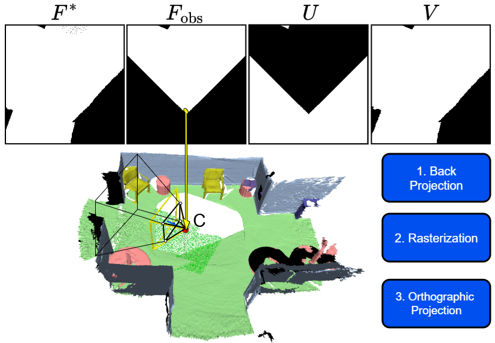
ECCV 2026 dataset and benchmark
Generative floormap completion from a single egocentric view, with real indoor scenes, aligned BEV supervision, and uncertainty-aware evaluation.
FlatLands asks a model to complete a metric indoor floormap from one partial egocentric observation and represent multiple plausible hidden layouts instead of forcing a single guess.
FlatLands connects reconstructed indoor scenes to partial BEV observations, then completes the unseen floor as a distribution of plausible layouts.
01 / Data acquisition
A virtual camera is placed at a physically valid pose in a reconstructed source scene. Visible floor geometry is back-projected, rasterized, and aligned to the camera frame.

02 / Completion process
At inference, one RGB frame yields depth and floor estimates, which are projected into observed BEV evidence. A conditional generator then samples completions while preserving that evidence.
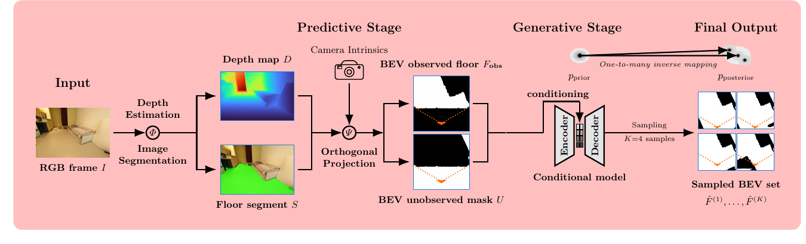
FlatLands harmonizes six established indoor datasets into one metric BEV task. The counts below are the scene layouts and retained observations contributed to the FlatLands release.
TUM + Google
Multi-session RGB-D reconstructions of naturally changing indoor environments, with aligned textured meshes and consistent instance-level semantic annotations across rescans.
FlatLands input: OBJ meshes with semantic floor labels.
Apple
Real-world mobile RGB-D captures collected with Apple LiDAR, including camera poses, surface reconstructions, registered depth, and labeled 3D furniture bounding boxes.
FlatLands input: PLY meshes with height-based floor extraction.
Matterport + Academic Partners
Building-scale RGB-D panoramas with globally aligned surface reconstructions, camera poses, and detailed 2D and 3D semantic segmentations across diverse real interiors.
FlatLands input: PLY meshes with semantic floor labels.
TUM + Stanford + Princeton
A large RGB-D video corpus of indoor scans with recovered 3D camera poses, reconstructed surfaces, and instance-level semantic segmentations for scene understanding.
FlatLands input: PLY meshes with semantic floor labels.
Zillow
Panoramas from real unfurnished homes with annotated room layouts, doors, windows, openings, 3D camera poses, and final 2D floor plans produced through a human-in-the-loop pipeline.
FlatLands input: Panoramas with metrically calibrated floor geometry.
TUM
High-fidelity indoor reconstructions coupling sub-millimeter laser scans, registered DSLR imagery, iPhone RGB-D streams, and long-tail semantic annotations.
FlatLands input: PLY meshes; held out entirely for OOD testing.
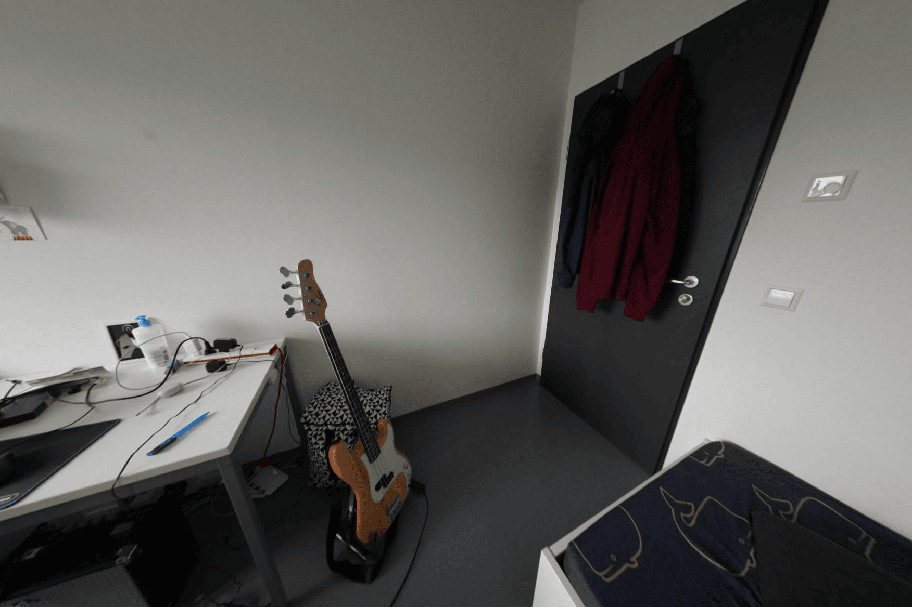
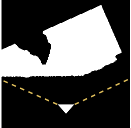
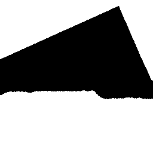
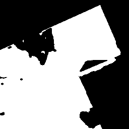
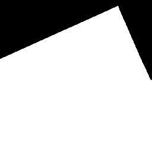
A sparse partial map may have several valid completions. FlatLands evaluates stochastic hypotheses and highlights where layout uncertainty concentrates.
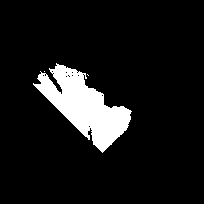
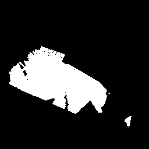
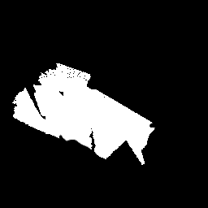
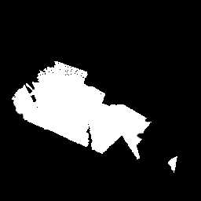
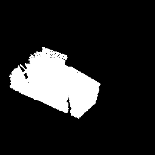
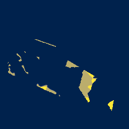
hf download Rudra1ssb/FlatLands FlatLands_final_dataset.zip --repo-type dataset
unzip FlatLands_final_dataset.zip -d FlatLandsFlatLands is a derived research dataset. Users must comply with the upstream source dataset terms listed in LICENSES.md.
FlatLands release materials are copyright (c) 2026 Subhransu S. Bhattacharjee, Dylan Campbell, and Rahul Shome.
FlatLands is a derived research dataset. The derived BEV maps, masks, metadata, statistics, provenance records, and release text are provided under the FlatLands release notice.
The underlying RGB-D captures, meshes, point clouds, panoramas, and source archives remain governed by their original dataset terms. This site includes research figures to explain the benchmark and does not relicense upstream source assets.
Paper figures are copyright (c) 2026 the FlatLands authors and are reproduced under the paper's CC BY 4.0 license.
Source dataset names, company and institution names, trademarks, and logos belong to their respective owners. They are displayed only to identify provenance; no endorsement is implied.
See COPYRIGHT.md, LICENSE, and LICENSES.md.